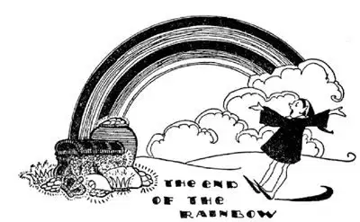

64
The End of the Rainbow
彩虹的尽头

GOLD!
It used to be said there was a pot of gold at the end of the rainbow, though no one has ever found it. Yet men have left their business and their families and homes and gone to the ends of the earth in search of gold and to find a short cut to riches, for gold is used for money all over the World, though small coins are not made of it because they would have to be too small and would easily be lost.
The largest gold mines in the World are in South Africa, and more than half of the gold in the World comes from gold mines near a city there called Johannesburg.
Gold is called the king of metals, for though platinum is more valuable, gold can be used for money and for ornament and for other things, and most people think it more beautiful. Pure gold is stamped 24 karat, but pure gold is so soft it wears away too easily and some other metal is usually mixed with it to make it harder. The finest rings and jewelry are usually 18 karat, which means that eighteen parts are of pure gold and six parts are of another metal. Look on a ring or watch and see if you can find the figures 18 K or 14 K stamped there.

彩虹的尽头
There was supposed to be a pot of gold at the end of the rainbow
过去人们常说在彩虹的尽头有一罐金子
Sometimes gold is found in little lumps which are called nuggets, but usually it is mixed through the rock and doesn’t show at all. The rock has to be ground to powder and then the gold separated from the powder.
Almost every family has at least one thing that has come from South Africa—a very small thing but a very valuable one. Can you guess what it is? The diamond in your mother’s ring. Nearly all the diamonds in the World come from a place called Kimberley in South Africa. They are found in a kind of blue clay in what used to be volcanoes.
Most of the diamonds used to be sent to Amsterdam in Holland to be cut and polished. The reason they are sent there rather than to some other country is because the diamond mines were first discovered by Dutch people living in South Africa. Now, however, many of the diamonds are cut in Kimberley and are all finished there before being shipped to other countries.
Diamonds are made out of the same stuff as coal, and if they were put in the fire would turn to coal. Sometimes people speak of coal as “Black Diamonds.” When a diamond is held to the light it may look pure white or it may be bluish or yellowish. The pure white diamonds are the most valuable.
The biggest diamond ever found was about the size of my fist. It was called the Cullinan diamond. It was too large and too valuable to be used as a single jewel, so it was broken into two pieces and each piece was cut and polished. The next largest diamond ever found was called the Great Mogul. But the Great Mogul was stolen. Of course, the thief could not sell such a large diamond, for, as there was only one such diamond in the World, every one would know he was the thief. It was something like stealing the picture of Mona Lisa. But the Great Mogul has never been seen since, so the thief must have broken it up into smaller diamonds and sold the pieces.
The owners of the diamond mines take extraordinary care to prevent the black people who dig the diamonds from stealing at least some of those they find. The mines are closed in with a high fence which is closely guarded, and the laborers are not allowed to go home at night but must live inside of the fence for three or four months. When they do leave, the guards, for they are guarded as if in prison, strip them and search their hair and ears and mouths to see that they have not hidden any diamonds away, for even a single diamond would be worth a fortune to one of the black people. They have found so many diamonds at Kimberley that, if they sold them all, diamonds would be too common and too cheap. In order to keep up the price, therefore, the owners of the diamond mines lock up millions of dollars’ worth and only sell them when people are willing to pay a good price.
An Englishman named Cecil Rhodes went out to South Africa for his health. He happened to be there when diamonds were discovered and fortunes were being made, and he found his health and found wealth too. A part of South Africa was named after him: Rhodesia. When Rhodes died he left a great deal of money, part of which was to be used to send some of the best young men chosen from our country and other countries to the great university of Oxford in England. These boys are called Rhodes Scholars.
Cecil Rhodes wanted to build a railroad from the top of Africa to the bottom of Africa, from Cairo in Egypt to Cape Town at the southern point. Most of the railroad has been built since he died. It is called the “Cape to Cairo” Railroad, but more is still to be built. Rhodes was one of the few Englishmen who didn’t ask to be sent home when he died. He chose a place in Africa on the top of a mountain to be buried. It was such a high point he called it “The World View.”
The capital of South Africa, Pretoria, is like an English city. The chief city is Cape Town, and it too is just like an English city. Only about a hundred years ago these cities were jungle in which only savage black men lived.
If you collect stamps you may have heard of a famous stamp called “A Mauritius” that a collector paid $20,000 for, enough money to buy a good house and lot, yet the only thing he can do with it is put it in a stamp album. Why should he pay so much money for it? Just to show others something he has that no one else has. Mauritius is a little island off the east coast of Africa. There are other islands near Africa. Madagascar is the biggest. Mauritius is one of the smaller ones. Zanzibar is another small one. Pictures of their stamps you will have in your album, if not the stamps themselves. From Zanzibar come the cloves your mother uses to spice baked apples, pickles, and hams. Cloves look like little burnt match heads, and I don’t believe you would ever guess what they really are. They are tiny flower blossoms that grow on the clove-tree!
【中文阅读】
金子！
过去人们常说在彩虹的尽头有一罐金子。不过从未有人找到过。然而，人们还是放下手头的工作，离开亲人和家乡，到天涯海角去寻找金子，期望找到致富的捷径，因为金子在世界各地都可作货币使用。不过小钱币并不是用金子做的，因为它们太小又容易丢失。
世界上最大的金矿在南非。世界上一半以上的金子产于南非金矿，这些金矿位于一座名叫约翰内斯堡的城市附近。
金子被称为“金属之王”，因为虽然白金更贵重，但金子可以用作货币，用来装饰，还有很多其他用途，而且大多数人认为金子更漂亮。纯金上都压印着24K的标记，但是纯金质软，很容易磨损，通常用金和其他金属制成合金，以增大硬度。最好的戒指和珠宝通常是18K的，这表示其中四分之三是纯金，四分之一是另一种金属。查看一枚戒指或一只手表，看看你能否找18K或14K的印记。
有时候，金子被发现时是一小块一小块，叫做天然金块。但通常金子都混在岩石中，一点都看不出。只有把岩石碾磨成粉，才能把金子从粉末中分离出来。
在美国，几乎每个家庭都至少有一件东西来自南非——一件很小但很贵重 的东西。你能猜到是什么吗？它就是你母亲戒指上的钻石。几乎世界上所有的钻石都来自南非一个叫金伯利的地方。钻石是在一种蓝色黏土中被发现的，发现的地点以前是火山。
过去大多数钻石都运送至荷兰的阿姆斯特丹进行切割和打磨。之所以送到荷兰而不是其他国家，是因为钻石矿最初是由居住在南非的荷兰人发现的。然而，现在多数钻石是在金伯利切割，并在那里加工完毕之后就被船送到其他国家。
钻石和煤都是由同一种成分组成的。把钻石扔进火里，就会变成煤。有时人们把煤叫做“黑色钻石”。拿着钻石对着光看，它可能是纯白色的，或者是淡蓝色的或者略带黄色。发纯白色光的钻石是最贵重的。
迄今为止发现的最大的钻石大约和我拳头一样大，叫做“库里南钻石”。它太大了，太贵重了，不适合用作一颗单独的宝石，于是，它被分为两半，分别打磨。迄今为止发现的第二大钻石叫做“大莫卧儿”，但是，大莫卧儿钻石被窃贼偷走了。当然，窃贼不敢卖掉这么大的钻石，因为这样的钻石在世界上只有一颗。只要他一拿出来，人人都会知道窃贼就是他。这种情况就像偷走蒙娜丽莎画像一样。但是，从此以后，大莫卧儿钻石就再也没有出现过，所以，窃贼一定是把钻石分成几颗较小的钻石卖掉了。
钻石矿的矿主格外小心，提防挖钻石的黑人偷走哪怕一点点他们发现的钻石。钻石矿被高高的栅栏围起来，并有人严密守卫。工人晚上不准回家，而是必须在栅栏里居住三或四个月。当到了真要离开时，警卫就要脱光他们的衣服，搜查他们的头发、耳朵和嘴巴，确保他们没有隐藏任何钻石，因为即使是一小块钻石，对任何一个黑人来说，都是一笔巨大的财富。在金伯利开采出大量钻石，如果矿主将这些钻石全卖了，钻石就会变得很寻常而不值钱了。所以，为了使价格不下降，矿主们囤积了价值数百万美元的钻石，等到有人出大价钱时才出手。
一位名叫塞西尔 · 罗得斯的英国人，为了健康来到南非；正当人们发现钻石、纷纷发财的时候，他恰巧在南非，于是他不仅获得了健康，也找到了财富。非洲有些地区就是以他的名字来命名的，叫做罗得西亚。罗得斯死后留下了一大笔遗产，其中的一部分用于资助从美国和其他国家选出的最优秀的男青年去英国著名的牛津大学学习，这些年轻人被称为罗得斯奖学金获得者。
罗得斯生前想修建一条铁路，从非洲北部一直延伸到非洲南部，从埃及的开罗一直到最南端的开普敦。罗得斯去世后，这条铁路一直在修建，大部分路段已经完成了，现在叫做“开普敦——开罗铁路”。不过，还有很长一段路没有 完成。罗得斯是少有的几个没有要求自己死后送回英国的英国人之一。他选择葬在非洲的一座高山的山巅，这个地方很高，他就称之为“世界景观”。
南非的首都，比勒陀利亚，像一座英国的城市。最重要的城市是开普敦，也像一座英国的城市。大约一百年以前，这些城市所在地还是热带丛林，里面住着未开化的黑人。
如果你爱好集邮，也许听说过一枚著名的邮票，叫做“毛里求斯”。一位收藏家花了两万美金买了这枚邮票，这笔钱足以买到一栋很好的房子和一块空地，然而他利用这枚邮票，唯一所能做的就是把它放进集邮簿里。他为什么要花这么多钱买这枚邮票呢？只是为了向别人显示他拥有别人没有的东西。毛里求斯是非洲东海岸边的一座小岛。在非洲附近还有其他一些岛屿。马达加斯加岛是最大的，毛里求斯是较小的岛之一，桑给巴尔岛是另一个小岛。这些地方的邮票即使你没有，你集邮簿上也会有这些邮票的照片。桑给巴尔岛出产丁香，你母亲把这种香料用于做云莓干、泡菜和火腿。丁香看起来像燃烧后的小火柴头。我想你一定猜不到丁香到底是什么。它们是长在丁香树上的非常小的花朵！